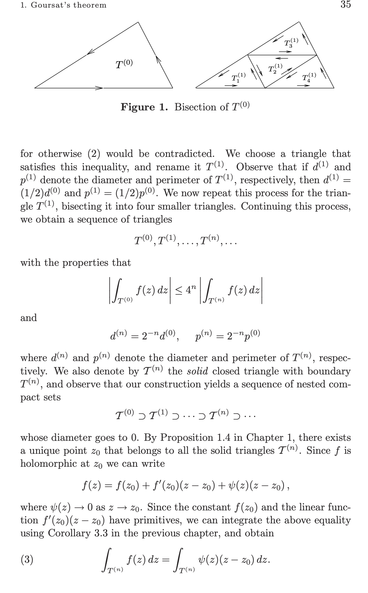
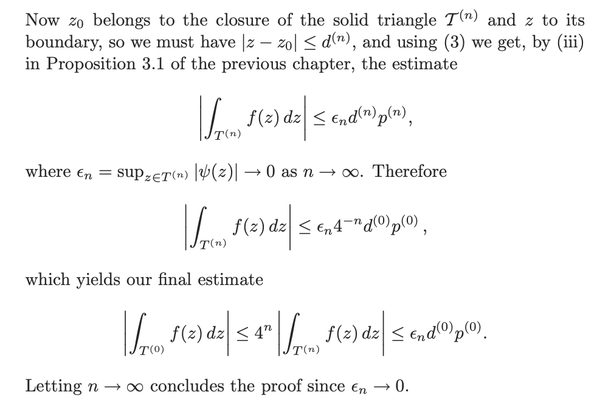
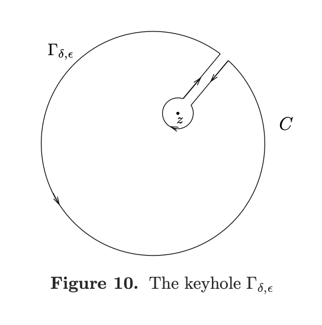

复变函数¶
解析函数定义¶
\(f\) 在 \(z_0\in \Omega\) 处解析，如果下列极限收敛
也就是解析等价于复可微
整函数¶
整函数是定义在整个复平面上的解析函数
柯西黎曼方程¶
函数 \(F(x,y)=u(x,y)+iv(x,y)\) 在 \(P_0\) 处可微当且仅当 存在线性变换 \(J:\mathbb{R}^2\to \mathbb{R}^2\) 使得
那么 \(J\) 就是 \(F\) 在 \(P_0\) 处的导数
事实上如果 \(F\) 在 \(P_0\) 处可微，那么有以下条件成立
- \(f'=\frac{\partial f}{\partial x}\)
-
\(f'=\frac{1}{i}\frac{\partial f}{\partial y}\)
- 那么 \(\frac{\partial f}{\partial x}=\frac{1}{i}\frac{\partial f}{\partial y}\)
柯西黎曼方程:
\(f=u+iv\) 全纯的充分条件¶
- 如果\(u,v\) 连续可微并且满足柯西黎曼方程，那么 \(f\) 在 \(z_0\) 处全纯
幂级数收敛半径¶
古萨定理¶
全纯函数在闭合三角形上的积分是0
- 证明: 分割三角形, 然后用全纯定义放缩
- 
- 
Morera定理¶
如果 \(f\) 在 \(\Omega\) 上连续并且对于 \(\Omega\) 上的任意三角形有 \(\oint_{\gamma} f(z)dz=0\), 那么 \(f\) 在 \(\Omega\) 上全纯
柯西定理¶
柯西积分公式¶
若 \(f\) 在一个包含圆 \(C\) (取正向方向) 的区域上全纯, 那么对于任意 \(z\in C\), 有
-
证明: 考虑 \(F(\zeta)=\frac{f(\zeta)}{\zeta-z}\), 在下面玩具曲线上的积分
- 
[!NOTE] 在复变函数中, 解析函数沿着闭曲线的积分是0, 实际上如果让虚部恒等于0, 那么积分退化成实数轴上的往返积分, 结果也是0.
在复变中, 全纯意味着无穷次可微¶
柯西不等式¶
幂级数展开推导¶
后者是一个几何级数, 再利用柯西积分公式
刘维尔定理¶
有界整函数是常值函数
- 证明: 由柯西不等式立即得到
代数基本定理¶
每一个 \(n\) 次复数系数多项式都有 \(n\) 个根
-
证明: 先证明有一个根, 然后用多项式除法, 递归证明
- 若 \(P(z)\) 没有根, 那么 \(1/P(z)\) 有界并且是整函数, 由刘维尔定理, \(1/P(z)\) 是常数, 矛盾
获得全纯函数的方法¶
-
一致收敛的全纯函数列的极限是全纯函数(导函数也对应收敛)
-
通过积分得到全纯函数
对称原理¶
若 \(f^+,f^-\) 分别在上半平面和下半平面上全纯, 且在实轴上连续, 并且 \(f^+(x)=f^-(x),x\in \mathbb{R}\), 那么可以得到一个新的全纯函数在 \(\mathbb{C}\) 上全纯
奇点¶
孤立奇点¶
若 \(f\) 在 \(z_0\) 的某个邻域上全纯, 但在 \(z_0\) 处不全纯, 那么称 \(z_0\) 是 \(f\) 的孤立奇点
例如 \(f(z)=\frac{1}{z}\), \(z=0\) 是孤立奇点
本性奇点¶
若 \(f\) 在 \(z_0\) 的任意邻域上都有无穷多个奇点, 那么称 \(z_0\) 是 \(f\) 的本性奇点
例如 \(f(z)=e^{1/z}\), \(z=0\) 是本性奇点
或者 \(f(z)=\frac{1}{\sin\frac{1}{z}}\), \(z=0\) 是本性奇点
极点¶
若 \(f\) 在 \(z_0\) 的某个邻域上全纯, 且在 \(z_0\) 处有有限阶的极点, 那么称 \(z_0\) 是 \(f\) 的极点
-
一个充要条件是 \(z_0\) 是 \(f\) 的极点 \(\iff |f|\to \infty, z\to z_0\)
-
并且 \(f=\sum_{n=-m}^\infty a_n(z-z_0)^n\), \(a_{-m}\neq 0\) 其中 \(m\) 称为极点的阶数
- 这里 \(\sum\limits_{n=-m}^{-1} a_n(z-z_0)^n\) 称为主部, \(a_{-1}\) 称为留数, 记为 \(res f= a_{-1}\)
我们有
-
计算留数的方法
- 单极点: \(\text{res} f=\lim_{z\to z_0}(z-z_0)f(z)\)
- \(n\) 阶极点:\(\text{res} f=\lim\limits_{z\to z_0}\frac{1}{(n-1)!}(\frac{d}{dz})^{n-1}[(z-z_0)^nf(z)]\), 这里 \(n\) 是极点的阶
留数定理¶
设 \(f\) 在 \(z_0\) 的某个邻域上除了有限个极点外全纯, 那么
[!NOTE] 于是判断函数在某个点的性质, 只需要计算极限 \(\lim_{z\to z_0}f(z)\), 如果是有限值, 那么就是全纯的, 如果没有定义但是在领域上有界, 那么就是可去奇点, 如果无界就是极点, 都不是那么就是本性奇点
Casorati-Weierstrass 定理¶
若 \(f\) 在 \(z_0\) 的某个邻域上全纯, 且 \(z_0\) 是 \(f\) 的本性奇点, 那么 \(f\) 在 \(z_0\) 的任意邻域中的像集是稠密的(可以取到全体复值)
亚纯函数¶
除去可列个极点外全纯的函数称为亚纯函数
- 我们称 \(f\) 在无穷处有极点, 如果 \(f(1/z)\) 在 \(z=0\) 处有极点
- 在扩展复平面上(包括无穷点)亚纯函数是有理函数
幅角原理¶
设 \(f\) 亚纯, 在 \(C\) 上没有零点和极点, 那么
其中 \(N\) 是 \(f\) 在 \(C\) 内部的零点个数(按重数计), \(P\) 是 \(f\) 在 \(C\) 内部的极点个数(按重数计)
[!NOTE] 极点的重数就是他的阶数
Rouché定理¶
设 \(f,g\) 在 \(C\) 及其内部全纯, 且 \(|f(z)|>|g(z)|,z\in C\), 那么 \(f\) 和 \(f+g\) 在 \(C\) 内部有相同个数的零点
开映射定理¶
若 \(f\) 在 \(\Omega\) 上全纯, 且 \(f\) 在 \(\Omega\) 上非常值, 那么 \(f\) 将开集映射为开集
最大模原理¶
若非常值函数 \(f\) 在 \(\Omega\) 上全纯, 那么 \(|f(z)|\) 在 \(\Omega\) 上没有最大值
[!NOTE] 也就是在开集上取不到最值
对数函数¶
主支对数函数是 \(f(z)=\log|z|+i\arg z\), 其中 \(\arg z\) 是 \(z\) 的辐角并且满足 \(-\pi<\arg z\leq \pi\)
平均值定理¶
傅里叶变换¶
复数形式的傅里叶展开
其中 \(c_n=\frac{1}{2\pi}\int_{-\pi}^\pi f(x)e^{-inx}dx\)
整函数¶
Jensen 公式¶
设 \(f\) 在包含圆盘的闭包上的一个区域上全纯, 并且 \(f\) 在圆盘边界上没有零点, 且 \(f(0)\neq 0\), 若 \(z_1,z_2,\cdots,z_n\) 是 \(f\) 在圆盘内的零点, 那么
函数的阶¶
整函数 \(f\) 的阶: \(\rho_f=\inf\{\rho:\exists A,B,s.t. |f(z)|\leq Ae^{B|z|^\rho}\}\)
Hadamard 定理¶
设整函数 \(f\) 的阶为 \(\rho\), 且 \(k\) 满足 \(k\leq \rho< k+1\), 用 \(a_1,a_2,\cdots\) 表示 \(f\) 的非零零点,那么有
其中 \(P(z)\) 是次数不超过 \(k\) 的多项式, \(m\) 是 \(z=0\) 作为零点的重数, \(E_k(z)=(1-z)e^{z+\cdots+z^k/k},E_0(z)=(1-z)\)
伽马函数, 黎曼 \(\zeta\) 函数¶
伽马函数¶
可以用 \(\Gamma(s)=\frac{\Gamma(s+1)}{s}\) 递归定义 \(\{-\infty,\cdots,-3,-2,-1\}\) 的函数值